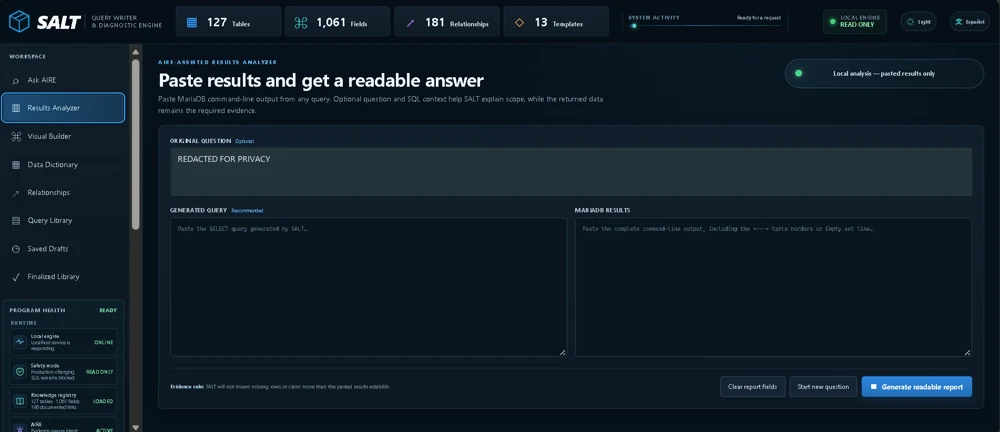
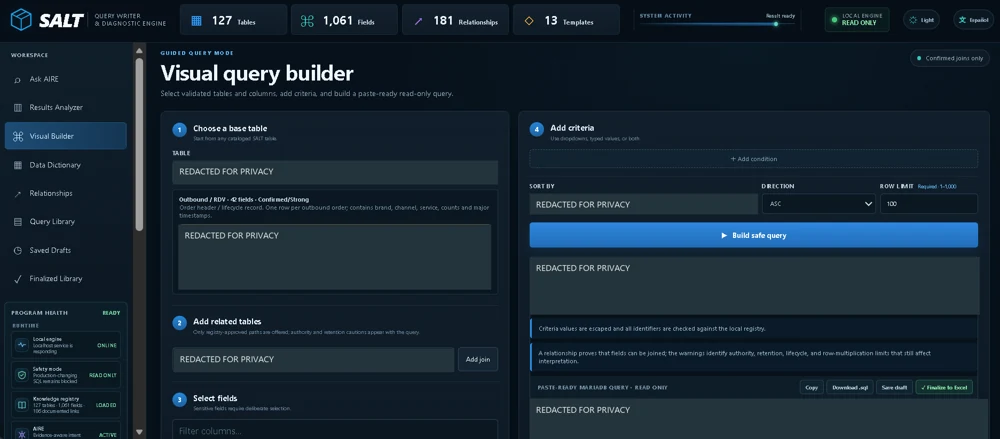
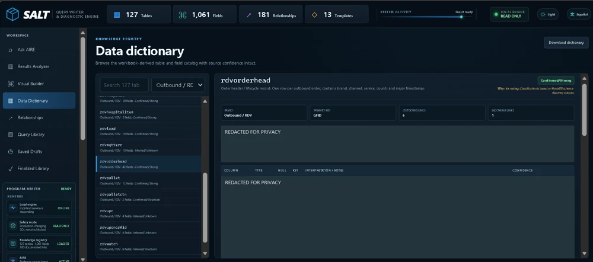
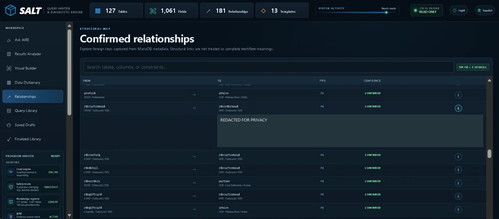
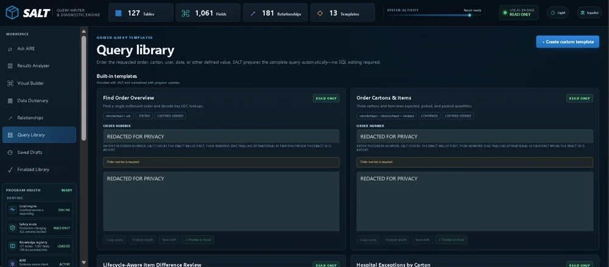
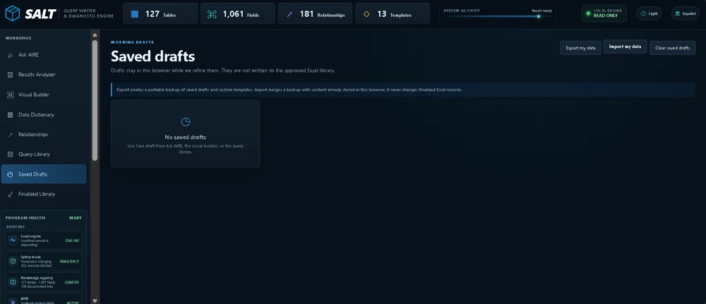
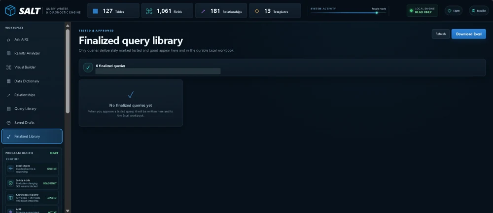
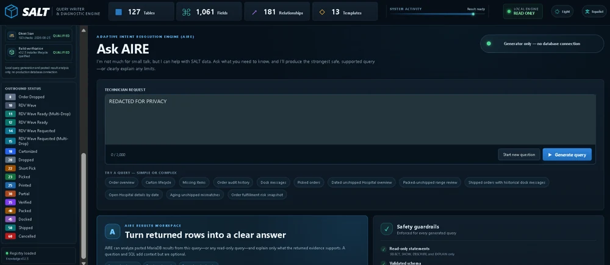
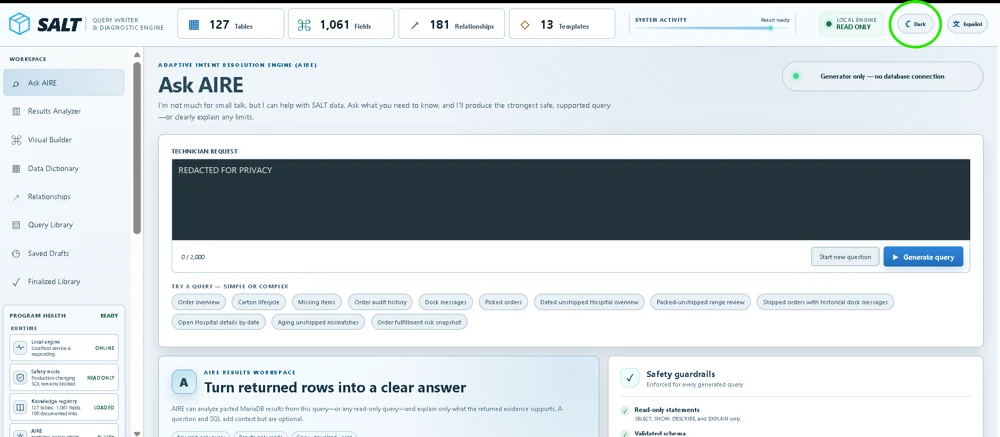
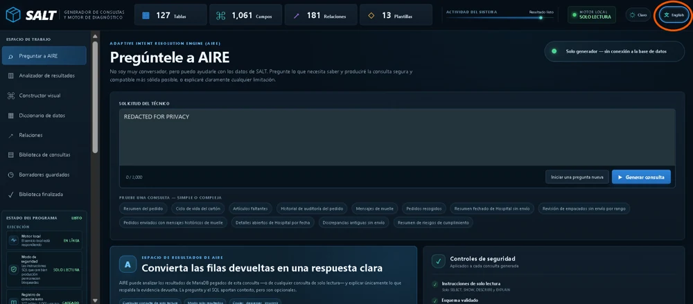

CASE STUDY 01 / Database investigation
SALT Query Engine
Making a complex warehouse database easier to understand
Questions, queries, and results
Explore the query builder, database reference, and results workspace.



Browse the remaining 9 screenshots on this page


















Select an image to enlarge it, then use the arrows to explore the application.
Finding answers shouldn't require memorizing a database
Troubleshooting warehouse orders often means searching across multiple database tables, understanding how records relate, identifying unfamiliar fields, and interpreting different stages of an order's lifecycle.
I was working with the SALT Warehouse Management System and wanted a faster, more consistent way to investigate operational questions without repeatedly building SQL queries from scratch.
The challenge wasn't simply writing SQL. It was understanding which information to trust, how different tables fit together, and what the returned data actually meant.
A database investigation workspace
I developed SALT Query Engine, a locally running Windows application that combines database knowledge, query generation, and results interpretation in a single interface.
The application incorporates a structured catalog covering 127 database tables, 1,061 fields, and 181 relationships in the version shown.
Instead of beginning with a blank SQL editor, a technician can describe what they need to investigate, select a guided query template, or build a query visually.
The application helps prepare SQL that can then be reviewed and run through an authorized MariaDB environment.
Key capabilities
- Ask AIRE: Describe an operational question in everyday language and generate a supported SQL query.
- Visual Query Builder: Select tables, fields, relationships, filters, and sorting options without writing the entire statement manually.
- Data Dictionary: Explore documented database fields, table purposes, relationships, and operational guidance.
- Query Library: Reuse established investigation patterns for common warehouse questions.
- Results Analyzer: Paste query results into the application to transform database output into a more understandable explanation.
- Saved and Finalized Queries: Organize work in progress and retain reviewed queries for future use.
SQL used in real database investigations
I built this around an actual warehouse database rather than a demonstration schema. I used SQL generated by the application in the real database environment and confirmed that it could return useful results.
Local preparation, external execution
The Windows-local application prepares SQL for read-only investigations and analyzes pasted results. It does not connect to or execute queries against the production database. Generated SQL still needs review before it is run in an authorized MariaDB environment.
Connecting warehouse knowledge with query design
I brought warehouse troubleshooting experience and relational database knowledge into the design. I defined the investigation workflows, organized schema guidance, and directed AI-assisted implementation around questions technicians need to answer.
I reviewed generated queries and used their results to evaluate whether the application was useful in real investigations.